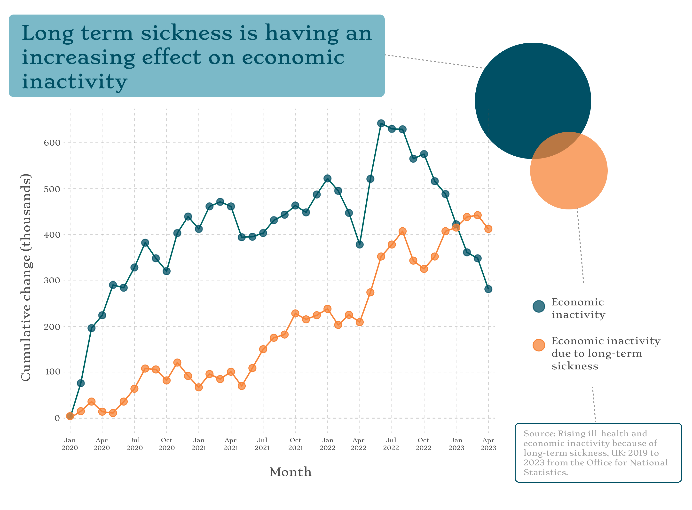

The aim: To report on a recent news story, find a dataset relevant to the piece and, produce a simple, static graphic that could run alongside the text of the article.
A recent analysis of workplace sickness in the UK has revealed that low productivity is costing businesses an additional £25 billion. The Institute for Public Policy Research (IPPR) who published the report, attributes these hidden costs to employees working through poor health, rather than taking time off.
Since 2016, there has been a noticeable increase in reported health concerns among the working-age population. The proportion of adults experiencing either one or two health conditions has risen from 21% in 2016 to 25% in 2023.
The implication of poor health can have even further negative effects on ecocomic productivity if individuals become unable to work due to long-term sickness. In response to public concern, the IPPR have proposed a plan to encourage a more harmonious relationship between well-being and work. The strategy to improve employee health involves tax incentives, regulations for employers, and compulsory reporting on worker health.
Source of story:
https://www.ippr.org/media-office/revealed-hidden-annual-cost-of-employee-sickness-is-up-30-billion-since-2018
Data source:
https://www.ippr.org/media-office/revealed-hidden-annual-cost-of-employee-sickness-is-up-30-billion-since-2018

The basic charts were produced in R and can be seen on the left. The font and colour palette gave direction to the design style of the visuals. The fine-tuning was done in Figma.
Two alternative visualisations can be seen on the right. These have more colour and elements however, for a news article I felt it would be more appropriate to have a simple design to not distract from the key message.
